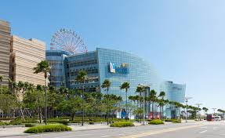

夢時代購物中心 · Dream Mall · 統一夢時代
亞洲最大購物中心之一 · 南高雄商業娛樂樞紐 · 夢想起飛的地方

2000 年代初期，高雄市政府積極推動「多功能經貿園區」計畫，將前鎮區台糖糖廠數十公頃的閒置土地進行都市更新。統一企業集團看準南高雄的發展潛力與高雄港的國際門戶優勢，於 2002 年 啟動夢時代購物中心的開發案，歷時 5 年規劃、3 年興建，總投資金額超過 300 億元，是當時台灣規模最大的民間商業開發案。
這塊土地的前身是 台糖高雄糖廠，在糖業沒落後長期閒置，成為都市中的荒地。夢時代的進駐不僅活化土地，更將這片工業遺址轉變為南高雄最繁華的商業核心。2007 年 6 月開幕當天，湧入超過 50 萬人次，創下台灣單一購物中心單日人流紀錄，成功將高雄的商業重心從北高雄擴展至南高雄。
統一集團啟動開發案，選址前鎮區 29 期重劃區（原台糖糖廠）
動工興建，總樓地板面積達 12.1 萬坪
正式開幕，單日湧入 50 萬人次，創台灣紀錄
高雄輕軌規劃串聯夢時代，提升南高雄交通便利性
輕軌 C5 夢時代站通車，成為直達大門口的交通樞紐
開幕十週年，累計客流量突破數億人次
南高雄最大生活娛樂中心，持續進化與升級
夢時代的建築設計以「海洋」為核心概念，深刻呼應高雄的港都身份。建築師從 鯨魚 的流線型身軀汲取靈感，外觀採用流線型波浪設計，搭配大面積玻璃帷幕引入自然光。白天時建築會隨著陽光角度呈現不同的光影變化，夜間則透過內透光與燈光設計展現溫暖氛圍。
商場內部以 挑高中庭 為核心，形成寬敞明亮的購物動線，讓消費者感受到開放、舒適的空間體驗。全館分為 藍鯨館（主要賣場）與 鯨魚館（停車場及部分設施），兩館之間以空橋相連。頂樓的「高雄之眼」摩天輪高 102.5 公尺，是高雄最高的摩天輪，也是全台少數設在購物中心屋頂的摩天輪之一。
館內設施
經濟效益
夢時代的出現徹底改變了南高雄的商業版圖。開幕後帶動周邊房地產價格大幅上漲，成功路、中華五路沿線陸續進駐各類商家與餐廳，形成新興商業聚落。統一集團更將夢時代作為旗下零售事業的旗艦據點，整合了統一超商、康是美、星巴克、Mister Donut 等關係企業資源，形成強大的品牌協同效應。
在文化層面，夢時代已超越購物中心的角色，成為高雄市民生活的重要場域。每年 跨年晚會 在時代廣場舉行，吸引數萬人潮；廣場經常有街頭藝人表演、文創市集、主題展覽。頂樓摩天輪更成為情侶約會、婚紗拍攝的熱門景點。夢時代的存在讓「逛商場」從單純的消費行為提升為 城市休閒體驗。
102.5m 屋頂摩天輪，俯瞰高雄港、旗津及市區全景，夜晚燈光秀絢麗奪目
匯集各大國際品牌、服飾、生活用品，一站滿足購物需求
戶外大型廣場，經常舉辦演唱會、文創市集、展覽等活動
特色書店與文創空間，融合閱讀、設計與生活美學
湯姆熊歡樂世界、玩具反斗城，親子同樂的好去處
商場部分區域可眺望高雄港，夕陽時分景色絕佳
B1 美食街 30+ 家選擇，7F 主題餐廳滿足各式味蕾
經常舉辦特展、IP 主題展、親子工作坊